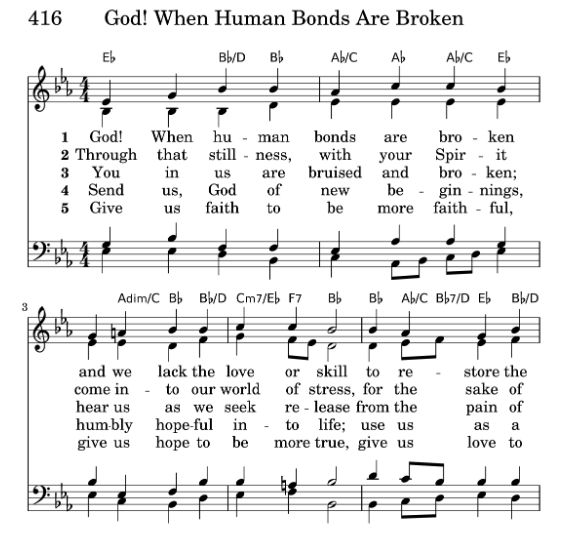
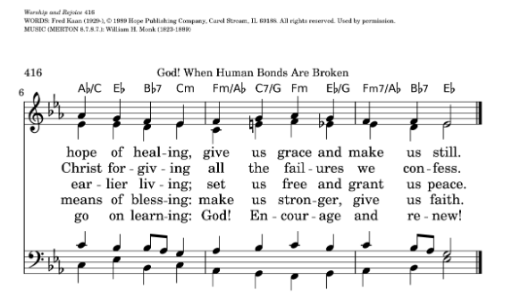

|
|
538求主醫治釋放 |
|
1 God, when human bonds are broken 2 Through that stillness, with your Spirit 3 You in us are bruised and broken: 4 Send us, God of new beginnings, 5 Give us faith to be more faithful, |
|
|

 |
|
|
|
|

538求主醫治釋放 -
God! When human bonds are broken by Fred Kaan. Joy and Ruth
Everingham
https://youtu.be/EaYtn-UCNnU
| Text: | God! When Human Bonds Are Broken |
| Author: | Fred Kaan, 1929- |
| Tune: | MERTON |
| Composer: | William H. Monk, 1823-1889 |
| Short Name: | Fred Kaan |
| Full Name: | Kaan, Fred, 1929-2009 |
| Birth Year: | 1929 |
| Death Year: | 2009 |
Fred Kaan

Hymn writer. His hymns include both original work and translations. He sought to address issues of peace and justice. He was born in Haarlem in the Netherlands in July 1929. He was baptised in St Bavo Cathedral but his family did not attend church regularly. He lived through the Nazi occupation, saw three of his grandparents die of starvation, and witnessed his parents deep involvement in the resistance movement. They took in a number of refugees. He became a pacifist and began attending church in his teens.
Having become interested in British Congregationalism (later to become the United Reformed Church) through a friendship, he was attended Western College in Bristol. He was ordained in 1955 at the Windsor Road Congregational Church in Barry, Glamorgan.
In 1963 he was called to be minister of the Pilgrim Church in Plymouth. It was in this congregation that he began to write hymns. The first edition of Pilgrim Praise was published in 1968, going into second and third editions in 1972 and 1975. He continued writing many more hymns throughout his life.
Dianne Shapiro, from obituary written by Keith Forecast in Independent (http://www.independent.co.uk/news/obituaries/fred-kaan-minister-and-celebrated-hymn-writer-1809481.html)